O que são branches?¶
Uma branch é uma linha de desenvolvimento dentro de um repositório. Ela permite trabalhar em mudanças separadas e integrá-las à branch escolhida quando estiverem prontas. A branch padrão pode se chamar main, master ou ter outro nome definido pelo projeto.
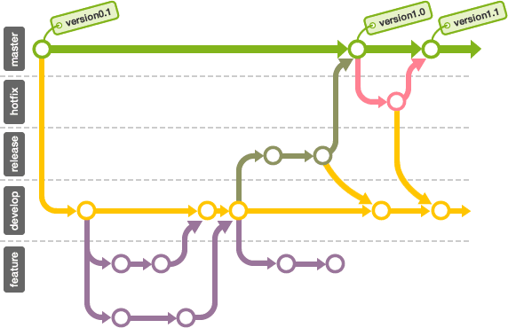
Branches permitem desenvolver e testar mudanças sem alterar imediatamente a branch principal. Se uma mudança não for aprovada, ela pode ser ajustada ou descartada sem afetar a branch principal.
Criando branches¶
A seguir, veremos como criar uma branch e trabalhar nela pelo GitHub Desktop.
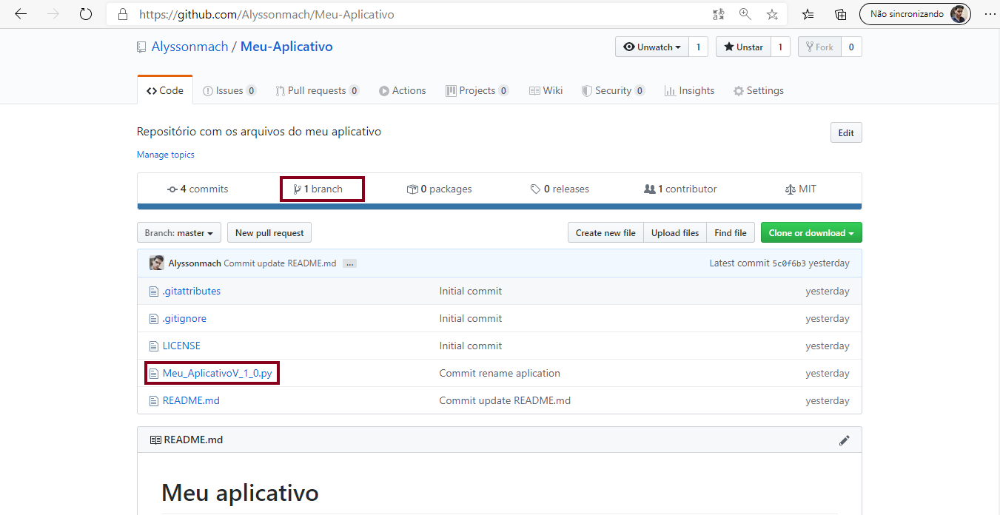
Um repositório começa com uma branch padrão, cujo nome depende da configuração do serviço ou do projeto. Use-a para o trabalho considerado principal e crie outras branches para desenvolver mudanças separadamente; depois, revise e integre as alterações quando estiverem prontas.
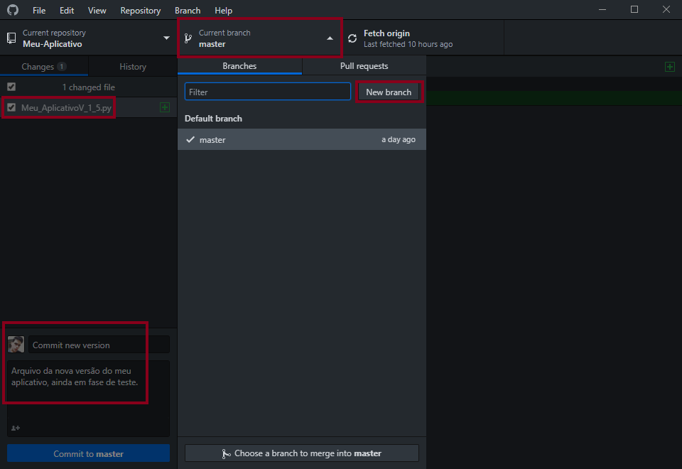
No GitHub Desktop, selecione a branch em que deseja trabalhar ou crie uma nova para separar as próximas mudanças.
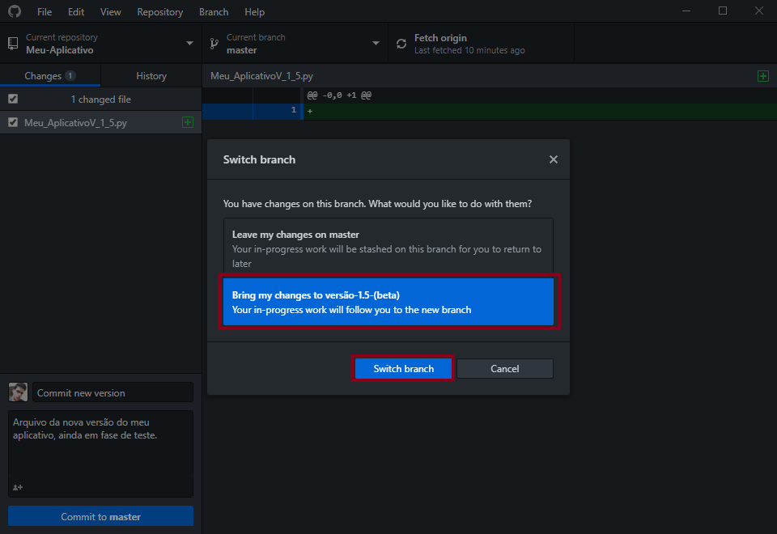
Antes de criar um commit, confira qual branch está selecionada. Neste exemplo, as mudanças serão registradas em uma nova branch chamada "versão-1-5-(beta)".
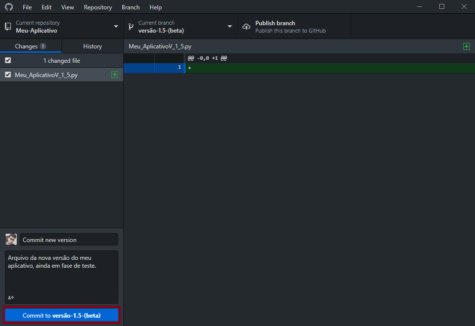
As alterações feitas enquanto uma branch está selecionada são registradas nela. Antes de publicá-la, revise os commits e confirme que a branch escolhida é a correta.
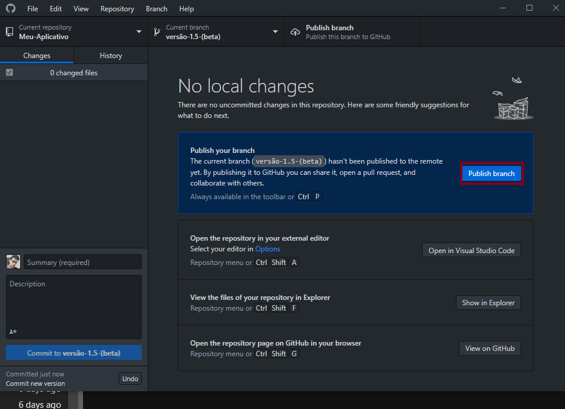
Quando quiser compartilhar a branch, use a opção para publicá-la no repositório remoto.
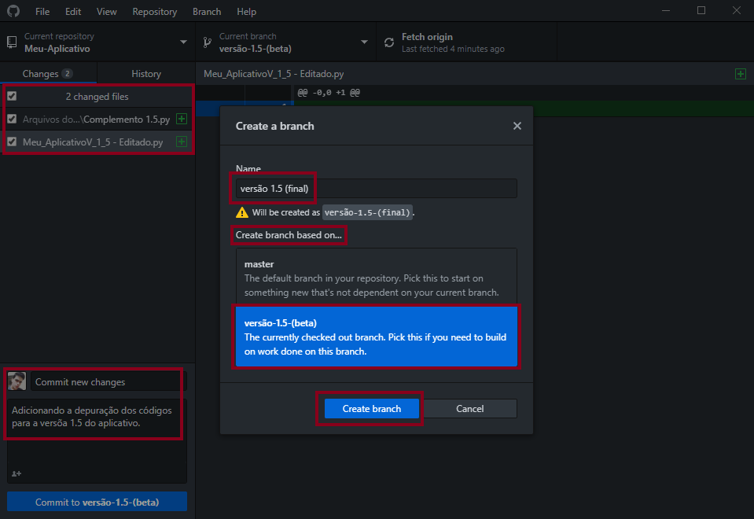
Uma branch pode ser criada a partir de outra. Nesse caso, ela começa a partir do commit selecionado, mas as duas branches podem seguir caminhos diferentes depois disso.
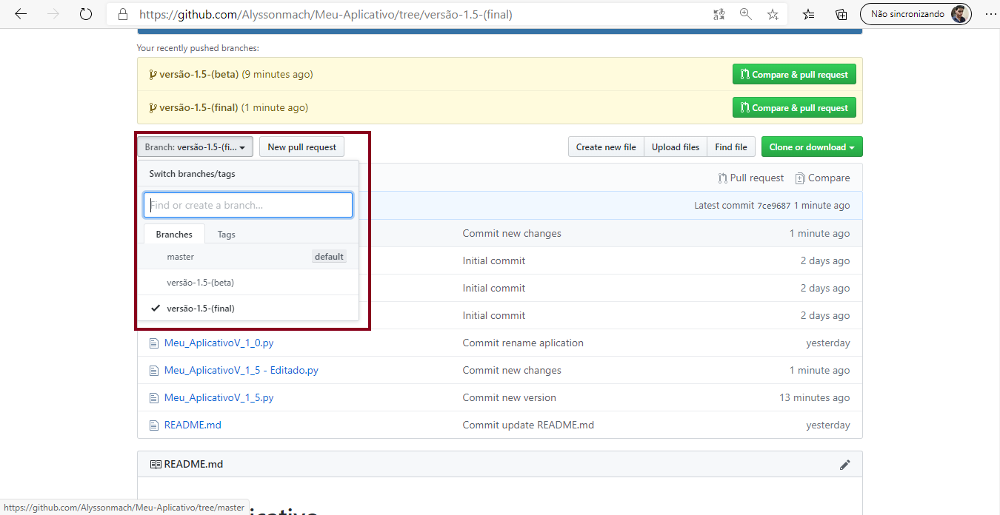
Depois da publicação, você poderá ver a branch no repositório remoto. Ela não recebe automaticamente mudanças feitas nas outras branches; as linhas de desenvolvimento só são combinadas quando você as integra.
O esquema mostra um exemplo de branches: uma branch de trabalho é criada a partir da principal; outra pode partir dela. As mudanças só passam de uma branch para outra quando são integradas.
- Exemplo de fluxo: uma branch beta parte da branch principal e, se necessário, uma branch final pode partir da beta. Cada uma pode ter commits próprios; as mudanças passam de uma para outra quando são integradas.
Integrando branches¶
Quando as mudanças estiverem revisadas e prontas, integre a branch de trabalho à branch de destino usando merge. Escolha a branch que receberá as mudanças e confira o resultado antes de publicar.
Neste exemplo, vamos integrar as mudanças da branch final à branch beta e, depois, as mudanças aprovadas à branch principal. Um projeto também pode integrar a branch final diretamente à principal; o fluxo depende da equipe.
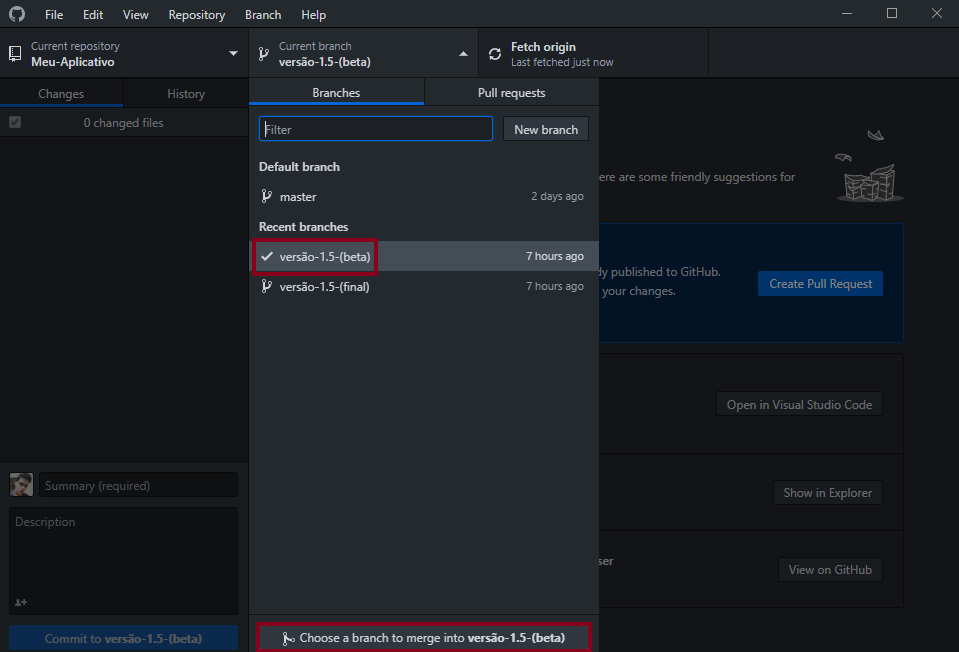
No GitHub Desktop, selecione a branch que receberá as mudanças e use a opção de merge. Depois, escolha a branch que contém as alterações a integrar.
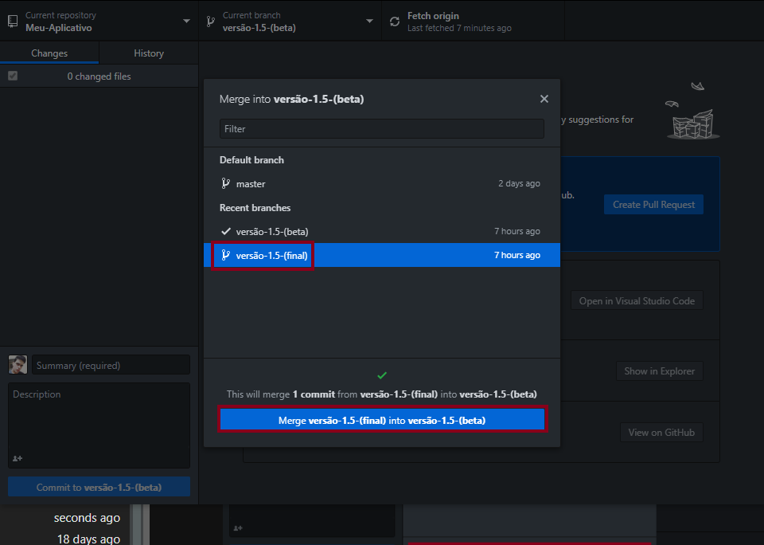
Neste exemplo, vamos integrar a branch final à beta e, depois, integrar as mudanças aprovadas à branch principal. Confira o resultado e resolva eventuais conflitos antes de publicar.
Repita o processo para integrar a branch beta à branch principal, se esse for o fluxo escolhido para o projeto.
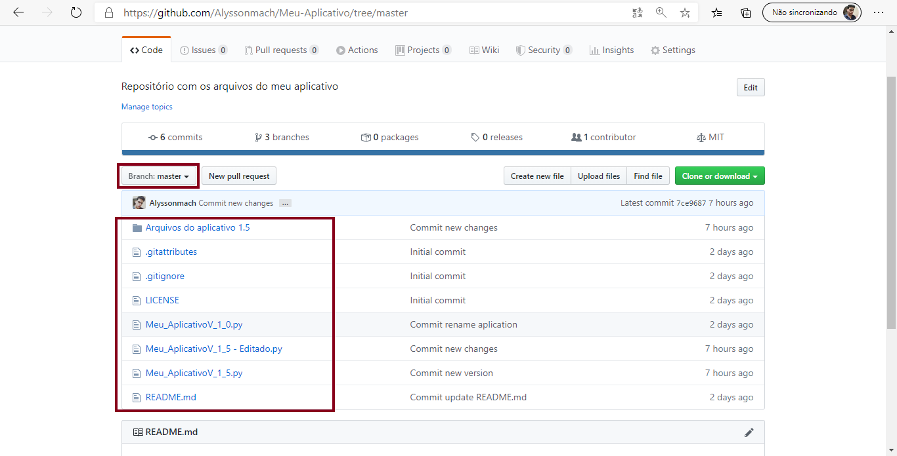
Depois da integração, confira o histórico e os arquivos da branch principal para confirmar que as mudanças esperadas estão presentes.
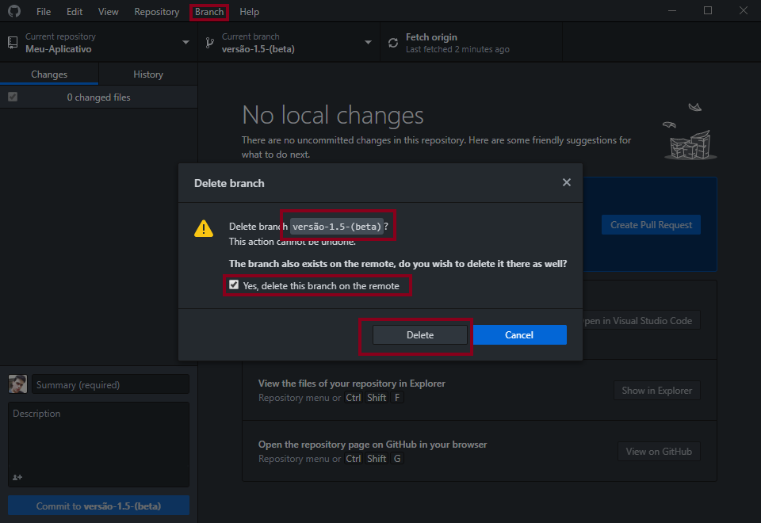
Depois que uma branch já foi integrada e não é mais necessária, você pode excluí-la. Mantenha as branches que ainda estiverem em uso ou que precisem ser preservadas.
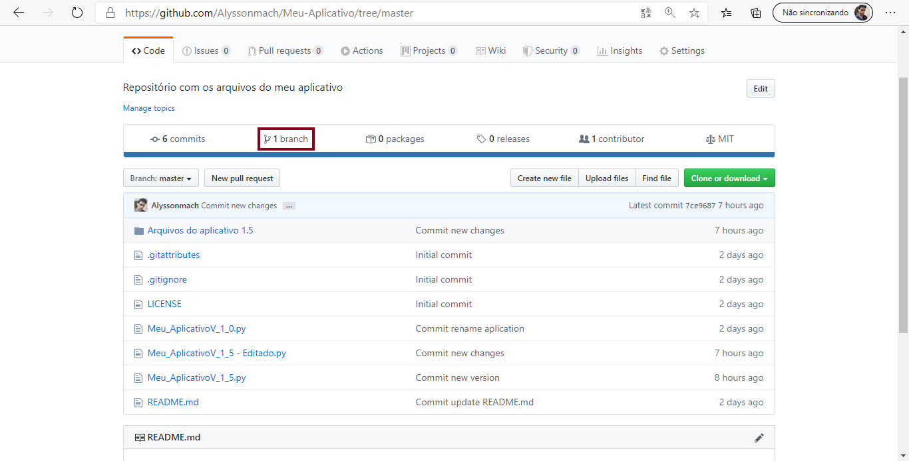
Depois de excluir uma branch, confira a lista de branches para confirmar que ela não aparece mais.
Próximos Passos...¶
Está gostando do conteúdo? Compartilhe com seus amigos para que eles possam aprender também! Ajude a tornar a educação gratuita mais plural e democrática.